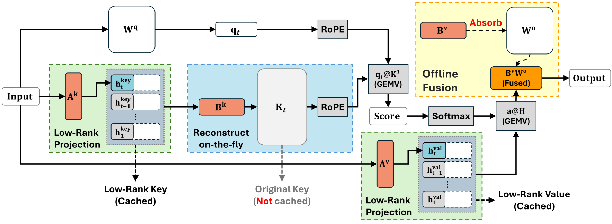

Low-rank KV-cache compression and system co-design for efficient large language model inference.
Overview and Motivation
As large language models (LLMs) support increasingly long context windows, memory capacity and memory bandwidth have become critical bottlenecks in inference. In particular, the Key-Value Cache (KV-Cache) grows with the context length, imposing substantial memory overhead and limiting the batch size and throughput of LLM serving systems.
Existing post-training approaches, such as token eviction and low-bit quantization, primarily address KV-Cache redundancy through token selection or numerical representation. However, these methods do not fully exploit the underlying structural redundancy in the cached representations. This motivates our investigation of low-rank approximation and system-algorithm co-design as complementary approaches to KV-Cache compression.
Our research explores this problem from two perspectives: intra-layer representation compression and inter-layer structural redundancy. We first investigate low-rank projections within individual layers and subsequently extend the analysis to geometric alignment across layers. Based on these observations, we develop training-free, post-training compression frameworks that reduce KV-Cache memory requirements while improving inference efficiency through system-level optimizations.
Research Trajectory: From Intra-Layer to Inter-Layer Low-Rank Compression
1. Palu: Exploiting Redundancy in the Hidden Dimension (ICLR 2025)

Although low-rank decomposition can reduce the dimensionality of KV representations, performing dynamic decomposition on activations during inference introduces additional computational overhead. A key challenge is therefore to obtain the benefits of low-rank representations without substantially increasing runtime costs.
Key Contributions.
Static Matrix Factorization: Palu factorizes the projection weights offline, allowing the model to store compact latent representations during inference and reconstruct the original representations when needed. This design avoids the runtime cost of performing low-rank decomposition directly on activations.
Group-Head Low-Rank Decomposition (G-LRD): We propose a group-head decomposition strategy that balances the efficiency of independently factorizing attention heads with the representational capacity of jointly modeling multiple heads. This approach provides a practical trade-off between compression efficiency and reconstruction quality.
System and Quantization Co-Design: We integrate Hadamard rotations into the compression pipeline to mitigate outliers associated with low-rank representations, while maintaining low runtime overhead. In addition, fused Triton/CUDA kernels are developed to improve execution efficiency. Together, these optimizations achieve attention speedups of up to 1.89x - 2.91x under the evaluated configurations.
While intra-layer compression reduces redundancy within individual attention layers, it does not directly address potential redundancy across layers. Existing cross-layer KV-Cache sharing approaches may require substantial model retraining or rely on token-level similarity measures that do not adequately capture the underlying structure of layer representations.
Key Contributions.
Geometric Analysis through Centered Kernel Alignment (CKA): We use Centered Kernel Alignment (CKA) to investigate the relationship between KV representations across layers. Our analysis suggests that, although token representations vary across layers, their dominant singular-vector subspaces exhibit substantial alignment. This observation provides a basis for exploring shared representations across layers.
Cross-Layer Factorization (CLF): Based on the observed geometric alignment, we introduce a factorization method that extracts a shared token basis across adjacent layers. By reducing the need to store separate representations for each layer, the proposed approach achieves up to 8x KV-Cache compression, with less than 3% accuracy degradation on the evaluated long-context benchmarks.
Selective Reconstruction (SR): To address the computational overhead of reconstructing compressed representations, we develop a query-dependent selective reconstruction mechanism. During decoding, the method reconstructs only the token rows required for attention computation on the GPU. This design reduces the dependence on PCIe-based data movement and achieves up to 4.23x end-to-end decoding throughput acceleration in the evaluated settings.
Selected Publications
Palu: KV-Cache Compression with Low-Rank Projection